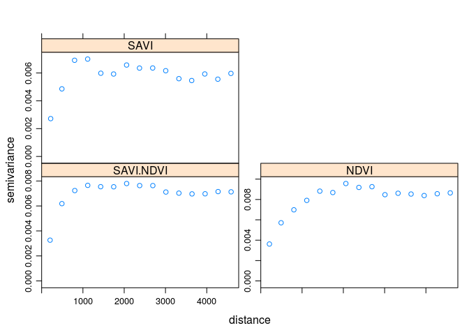

Rodział 9 Estymacje wielozmienne
9.1 Kokriging (prosty i zwykły, SCK i OCK)
9.1.1 Kokriging (ang. co-kriging)
- Kokriging pozwala na wykorzystanie dodatkowej zmiennej (ang. auxiliary variable), zwanej inaczej kozmienną (ang. co-variable), która może być użyta do prognozwania wartości badanej zmiennej w nieopróbowanej lokalizacji
- Zmienna dodatkowa może być pomierzona w tych samych miejscach, gdzie badana zmienna, jak też w innych niż badana zmienna
- Możliwa jest też sytuacja, gdy zmienna dodatkowa jest pomierzona w dwóch powyższych przypadkach
- Kokriging wymaga, aby obie zmienne były istotnie ze sobą skorelowane
- Najczęściej kokriging jest stosowany w sytuacji, gdy zmienna dodatkowa jest łatwiejsza (tańsza) do pomierzenia niż zmienna główna
- W efekcie, uzyskany zbiór danych zawiera informacje o badanej zmiennej oraz gęściej opróbowane informacje o zmiennej dodatkowej
- Jeżeli informacje o zmiennej dodatkowej są znane dla całego obszaru wówczas bardziej odpowiednią techniką będzie kriging z zewnątrznym trendem (KED)
9.1.2 Kokriging | Wybór dodatkowej zmiennej
- Wybór zmiennej dodatkowej może opierać się na dwóch kryteriach:
- Teoretycznym
- Empirycznym
9.2 Krossemiwariogramy
9.2.1 Krossemiwariogramy
- Krossemiwariogram jest to wariancja różnicy pomiędzy dwiema zmiennymi w dwóch lokalizacjach
- Wyliczając Krossemiwariogram otrzymujemy empiryczne semiwatiogramy dla dwóch badanych zmiennych oraz kroswariogram dla kombinacji dwóch zmiennych
- Krossemiwariogram znajduje swoje zastosowanie w technice zwanej kokrigingiem
9.2.2 Krossemiwariogramy
punkty <- read.csv('dane/punkty.csv')
coordinates(punkty) <- ~x+y
proj4string(punkty) <- '+init=epsg:2180'
punkty_ndvi <- read.csv('dane/punkty_ndvi.csv')
coordinates(punkty_ndvi) <- ~x+y
proj4string(punkty_ndvi) <- '+init=epsg:2180'
g <- gstat(NULL, id='SAVI', form = savi~1, data = punkty)
g <- gstat(g, id='NDVI', form = ndvi~1, data = punkty_ndvi)
g## data:
## SAVI : formula = savi`~`1 ; data dim = 252 x 5
## NDVI : formula = ndvi`~`1 ; data dim = 1011 x 1v <- variogram(g)
plot(v)
9.3 Modelowanie krossemiwariogramów
9.3.1 Modelowanie krossemiwariogramów | fit.lmc
- Funkcja
fit.lmcdopasowuje liniowy model koregionalizacji do semiwariogramów wielozmienych
9.3.2 Modelowanie krossemiwariogramów
g <- gstat(g, model=vgm(0.006, 'Sph', 2000, 0.001), fill.all=TRUE)
g_fit <- fit.lmc(v, g)
g_fit## data:
## SAVI : formula = savi`~`1 ; data dim = 252 x 5
## NDVI : formula = ndvi`~`1 ; data dim = 1011 x 1
## variograms:
## model psill range
## SAVI[1] Nug 0.002841025 0
## SAVI[2] Sph 0.004263643 2000
## NDVI[1] Nug 0.003120480 0
## NDVI[2] Sph 0.006335148 2000
## SAVI.NDVI[1] Nug 0.002977476 0
## SAVI.NDVI[2] Sph 0.004962607 2000plot(v, g_fit)
9.4 Kokriging
9.4.1 Kokriging
ck <- predict(g_fit, grid) ## Linear Model of Coregionalization found. Good.
## [using ordinary cokriging]summary(ck)## Object of class SpatialGridDataFrame
## Coordinates:
## min max
## s1 745541.7 756971.7
## s2 712616.2 721256.2
## Is projected: TRUE
## proj4string :
## [+init=epsg:2180 +proj=tmerc +lat_0=0 +lon_0=19 +k=0.9993
## +x_0=500000 +y_0=-5300000 +ellps=GRS80 +towgs84=0,0,0,0,0,0,0
## +units=m +no_defs]
## Grid attributes:
## cellcentre.offset cellsize cells.dim
## s1 745586.7 90 127
## s2 712661.2 90 96
## Data attributes:
## SAVI.pred SAVI.var NDVI.pred NDVI.var
## Min. :0.1092 Min. :0.0034 Min. :0.2284 Min. :0.0037
## 1st Qu.:0.2903 1st Qu.:0.0038 1st Qu.:0.4713 1st Qu.:0.0043
## Median :0.3166 Median :0.0039 Median :0.5051 Median :0.0044
## Mean :0.3131 Mean :0.0039 Mean :0.5008 Mean :0.0045
## 3rd Qu.:0.3438 3rd Qu.:0.0040 3rd Qu.:0.5406 3rd Qu.:0.0046
## Max. :0.4055 Max. :0.0051 Max. :0.6260 Max. :0.0063
## NA's :1242 NA's :1242 NA's :1242 NA's :1242
## cov.SAVI.NDVI
## Min. :0.0034
## 1st Qu.:0.0038
## Median :0.0040
## Mean :0.0040
## 3rd Qu.:0.0041
## Max. :0.0054
## NA's :1242spplot(ck, 'SAVI.pred')
spplot(ck, 'SAVI.var')